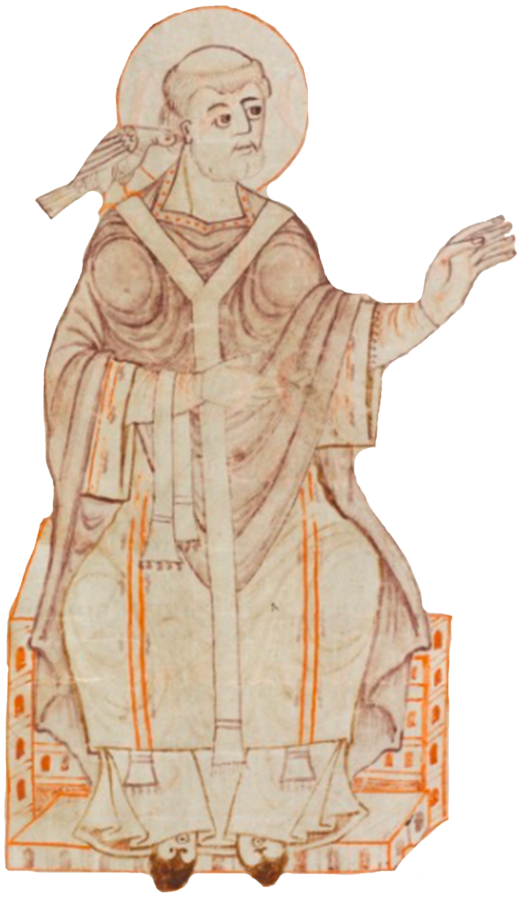
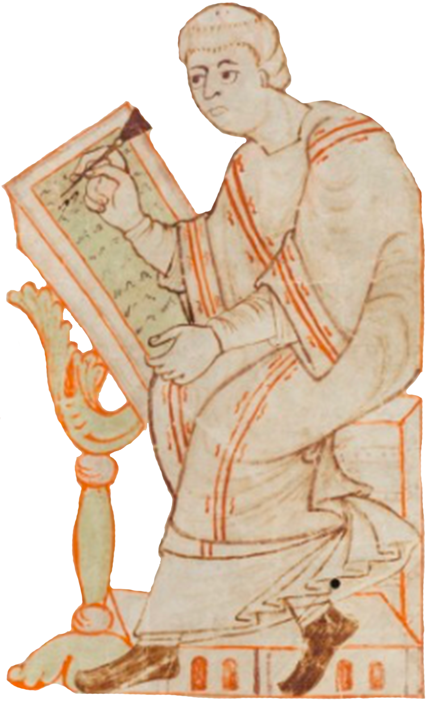

Que fait-on aujourd'hui ?
📜 Historique
Découvrez les origines de la notation monastique et l'âge d'or de Saint-Gall.
📖 Manuscrits
Apprenez à vous repérer sur une page et explorez les différents types de pièces.
✍️ Sémiologie
Étude détaillée des notations, catalogue interactif des neumes et lettres significatives.
🎵 Théorie musicale
Comprendre les modes de l'octoéchos, les psalmodies et l'étude du monocorde.
🗂️ Répertoire
Explorez le catalogue des fêtes et triez les chants selon leurs catégories liturgiques.
🔍 Pratique
Exercez-vous avec nos lectures guidées pas à pas et testez-vous via les quiz.
Catalogue des Neumes
Ou cliquez sur un neume pour voir sa fiche :
Les Lettres Significatives
Choisissez l'une sections ci-dessous pour approfondir votre étude des lettres significatives de Saint-Gall :
En apprendre plus sur les lettres significatives
Découvrez l'origine de ces lettres, les notices poétiques de Notker et l'interprétation vocale sous-jacente.
Catalogue des lettres significatives
Consultez la liste exhaustive de chaque sigle et sa description musicale associée.
En apprendre plus sur les Lettres Significatives
Catalogue des Lettres Significatives
L'Historique
Se repérer dans les Manuscrits
Types de Pièces
Les Notations
Je débute
Les Modes
Les Psalmodies
Le Monocorde
Catalogue des Fêtes
Trier selon les Catégories
Bibliographie
Sitographie
Manuscrit → Carré
Carré → Manuscrit
Lecture Guidée : Analyse d'un Chant
Écouter l'extrait :